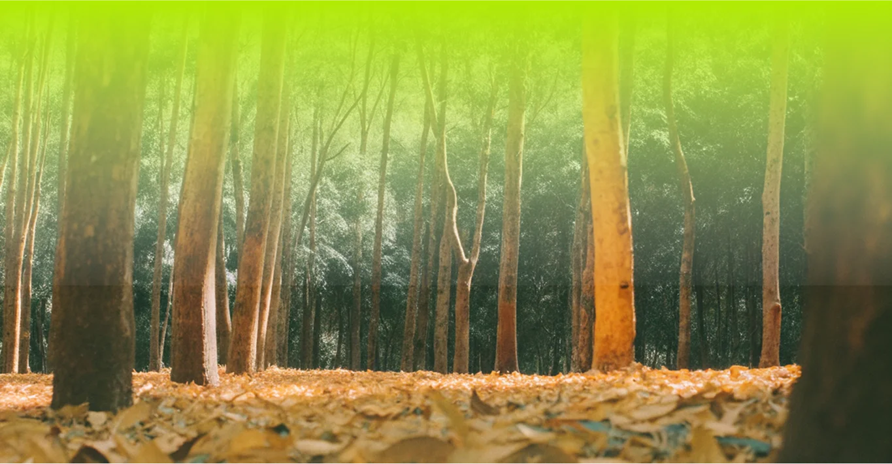

Уменьшение производства хлорофилла
Осенью световой день становится короче, что служит сигналом для растений о приближении зимы[4]. В результате деревья замедляют производство хлорофилла — зеленого пигмента, отвечающего за фотосинтез[1]. Когда количество хлорофилла уменьшается, начинают проявляться другие пигменты, присутствующие в листьях:
- Каротиноиды — желтые и оранжевые пигменты
- Антоцианы — красные и пурпурные пигменты
- Каротиноиды — желтые и оранжевые пигменты
- Антоцианы — красные и пурпурные пигменты
Подготовка к зиме
Изменение цвета листьев — часть процесса подготовки деревьев к зимнему периоду. Растения извлекают питательные вещества из листьев обратно в ветви и ствол, чтобы сохранить ресурсы на зиму[4].
Влияние температуры
Температура играет важную роль в процессе изменения цвета листьев:
- Теплая и сухая осень способствует более ярким осенним краскам[1].
- Низкие ночные температуры стимулируют производство антоцианов, усиливая красные оттенки[4].
- Резкие заморозки могут привести к быстрому побурению листьев.
- Теплая и сухая осень способствует более ярким осенним краскам[1].
- Низкие ночные температуры стимулируют производство антоцианов, усиливая красные оттенки[4].
- Резкие заморозки могут привести к быстрому побурению листьев.
Роль влажности
Влажность также влияет на осеннюю окраску листьев:
- Недостаток влаги может вызвать преждевременное пожелтение и опадание листьев[3].
- Высокая влажность может замедлить процесс изменения цвета.
- Недостаток влаги может вызвать преждевременное пожелтение и опадание листьев[3].
- Высокая влажность может замедлить процесс изменения цвета.
Терморегуляция листьев
Интересно, что растения способны регулировать температуру своих листьев независимо от температуры окружающего воздуха[5]. Это помогает им оптимизировать процесс фотосинтеза и, следовательно, влияет на сроки и интенсивность осенней окраски.
Что в итоге?
В целом, осенняя смена цвета листьев — это комплексный процесс, зависящий от множества факторов окружающей среды, включая температуру, влажность и продолжительность светового дня. Это позволяет растениям эффективно подготовиться к зимнему периоду, сохраняя ресурсы и адаптируясь к меняющимся условиям.